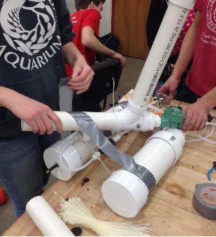
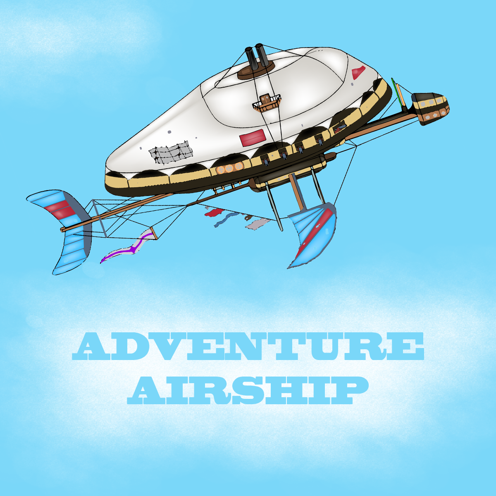
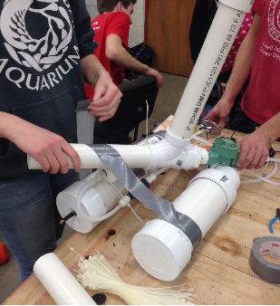
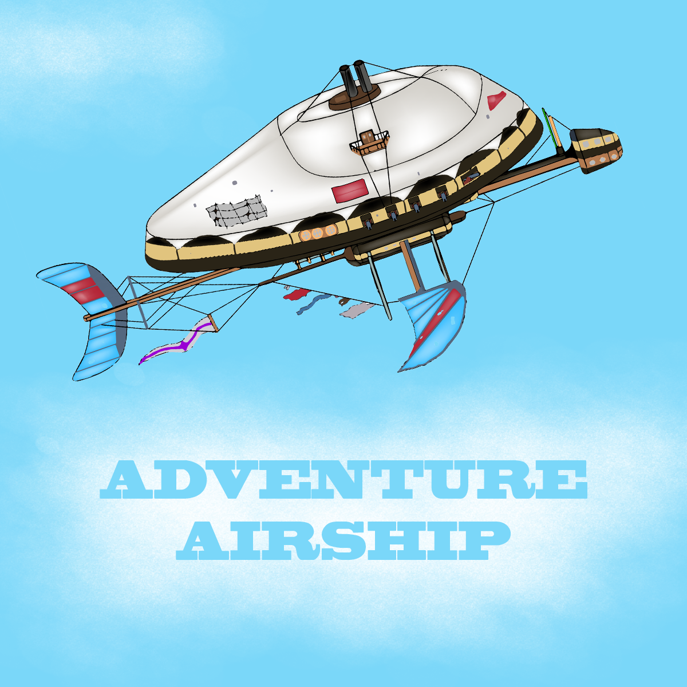
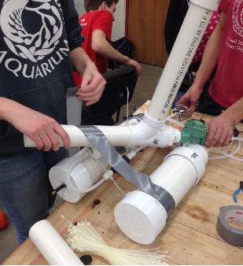
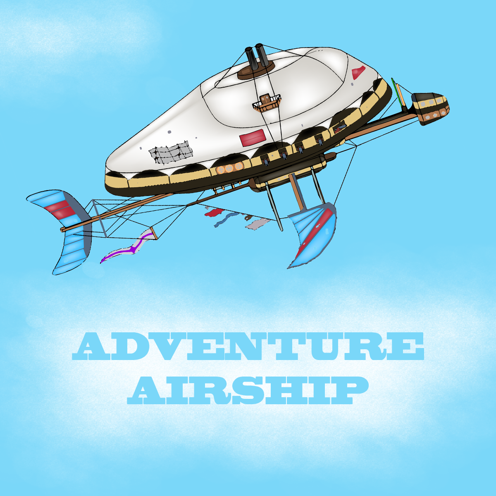

I've worked on all sorts of projects.
P!llPal is an automated wristwatch-like pill dispensing device that doesn't allow users to forget to take their medication. I worked on designing the product, market research, and building the first (extremely rough) prototype. P!llpal won the first Life Changing Labs Make-a-Thon, and we are working on a better prototype.
I'm also in my school's Technology Student Association chapter. I am in charge of the chapter's social media, but I also do several competitive events. This year, for the state competition, I was on the Catapult team. The objective of Catapult is to create a device (we interpreted the word "catapult" fairly loosely) that shoots hollow golf balls at a target. We built a cannon that uses compressed air to shoot the balls. The catapult won first place at the state competition, and is really great to bring to community events because children love using it.
I also worked on a video game where I helped with the graphics and gameplay design.
Commun is a meeting app, and current project of mine. It allows you to find people in your vincinity that have similar interests as you and meet them face to face. I designed the first version of the user interface of the app, and will most likely continue on to work on building a working version.

